This post is sponsored in full by my very own coinpurse with a loose closure.
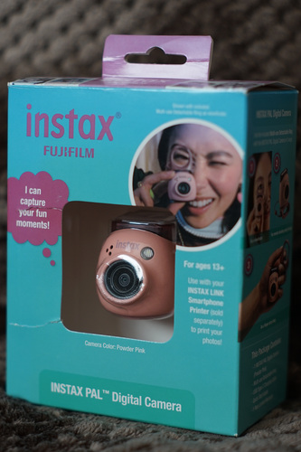 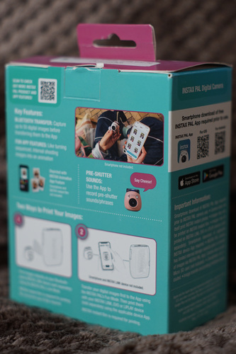The Instax Pal has an MSRP of $107 and comes in 4 cute colors. The full manual isn't included, so you'll need to check it out online.
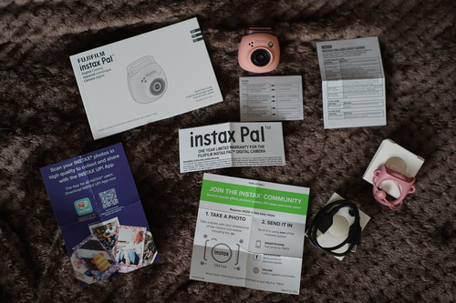I purchased mine in "powder pink" at Walmart for $15 after waiting for the clearance price to drop to $20 over a few months. I watched it drop from $99, to $49, to $30, to $15. My time to strike!
This camera features 2 buttons and a switch for interactivity. The top button turns off and on the camera when held for 2 seconds. The round button in the back is the shutter. The switch on the bottom changes the camera from "F" to "L" modes. You'll stay on "F" unless you are printing your next photo immediately to the link printer.
The thing makes start up, shut down, and shutter noises. The noises at volume 1 are quiet and can be adjusted. The noise level at 1 is hardly audible outdoors. You cannot disable these noises. There's a second sound profile that is even more annoying. The app gives you an option to record a "pre-shutter sound", but god knows why anyone would want that. After your 50 shot limit, regardless of if you use a microSD card or not, the camera will announce "Photo limit reached. Connect the app to continue" when you hit the shutter button. Removing the photos from the SD card does not solve this issue. You must connect to the app or your camera will stop functioning.
The camera has internal storage allegedly allowing for 50 shots and a MicroSD/MicroSDHC slot. You insert the card with the label facing the front of the camera, but it's awkward to get it in and out. It'll be tough to get back out without fingernails. It can almost fully be inserted the wrong direction and can be inserted at the wrong angle in both the right and wrong direction.
The filenames it creates are "DSCF0xxx.JPG". If you delete the photos, it will start again at "DSCF0001.JPG". You may find this to be a small pain.
The camera has an attachable viewfinder ring that fits over the top. It's made out of a softer plastic and has a cute design. Even the attachment loop is shaped like a spaceship. It is very useless as a viewfinder. It also makes pressing the on/off button very hard when attached to the top of the camera. The manual suggests using it as a stand to adjust the angle of the camera, which is useful! I wasn't going to use it at all until I tried that. You may notice in my photos there is a wrist strap attached to mine. This is off one of my instax mini cameras and was not included. The loop attachment hole is under the USB-C port on the bottom back of the device.
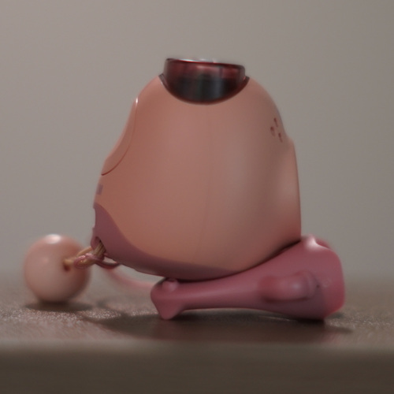 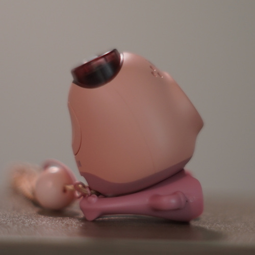There is nothing ergonomic about using it! It's very uncomfortable to use. The shutter button is exactly where I'd like my eye to be, in the center back of the camera. The shutter really should have been on the top.
I often hold the shutter button until hearing a shutter sound, which took 2 shots and 2 shutter noises. Just a short press will get you the image, but there is a delay. The camera will take up to 7 shots while the shutter button is held.
EXIF data claims the camera has a 1.4mm focal length. According to the specs in the manual, the 35mm equivalent is 16.25mm, which is very wide for those unfamiliar.
It has a flash, which is set to auto by default. This can be changed to on or off in the app settings.
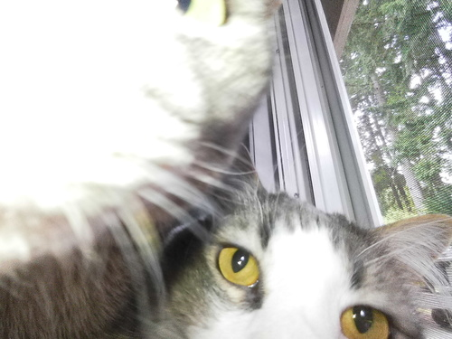It charges via USB C. Flash is on while charging and off when complete. It becomes warm pretty quickly, but hasn't gotten burning hot yet. I'd say the battery life while using the app is poor. It performs much better when not connected to the app.
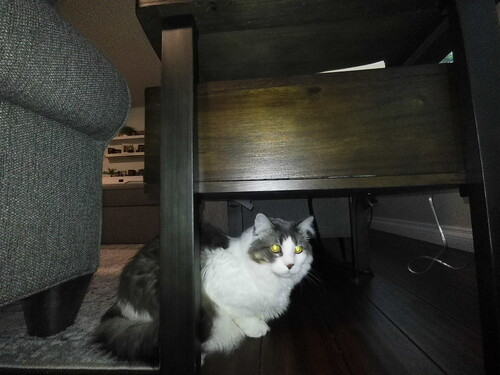For some reason, the camera is designed to have the lens point slightly upward when on a flat surface. Since there's no accurate viewfinder, I think this isn't a dealbreaker. You're not going to get an accurate shot even if the lens was pointed straight forward. I do feel like my resulting photos are tilted more upward than I intended, but it's hard to have intention. It takes me 3 or 4 shots to get my subject fully in the shot. I noticed I can place my finger on the side of the lens to feel out the plane the lens is on, but this can also mean my finger is in the shot. There is a tripod mount on this bad boy.
There's no cover over the lens, as there is with other instax cameras. I do have concerns that the clear cover over it will become scratched or break, especially when used as a keychain.
A factor in longevity is the rechargable battery. Because of this, the Pal does have a shelf life. I don't know if the rechargable battery will fail before or after the app is unusable. The full manual online does show you how to remove the battery for disposal, but it's unlikely replacements will be offered. The camera does turn on and take photos while charging, but I did not test if it will still run with no battery installed.
When first starting the app, it will ask you to disagree or agree to log collection. You can hit disagree and the app will still function.
You will be prompted to connect to your Pal camera via bluetooth. It asks you to input the serial number on the bottom of the device. I didn't try entering the wrong serial number, though the OCR in the app originally misread my serial number using the camera. Hopefully this is a check to not allow some rando to download your photos.
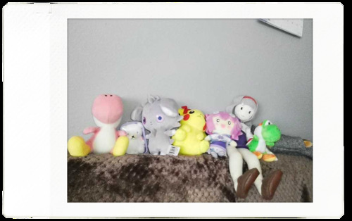The Pal camera is your virtual pet. Your camera has a name and animations. In case you need some butt pats for using your camera, this app also offers achievements for taking and printing photos.
The app offers remote shooting. It's very laggy and low res, but if you want a viewfinder, this is the best you've got. You can at least frame the shot!
The app has its own gallery, which is not your phone gallery. You can multiselect images in the app gallery to download to your phone gallery. Images are only added to the app gallery when downloaded from the Pal device. I assume this was a choice to prevent images not taken with the device to be used with the editor.
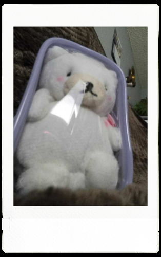Everything involving the app is extremely slow and clunky. My app gave me the time estimate of 12 min 30 seconds to transfer 50 photos. The actual time was closer to 9 minutes, before getting stuck and losing all 50 photos.
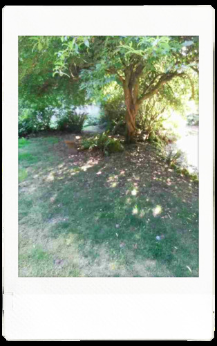The editor is fine at best, but you're better off using LINE Camera. There's a ton more functionality and you don't have to take the photo on the Pal to use it. If the Pal app even downloads your photos... Just in: LINE Camera has ads now. Sorry. It sucks.
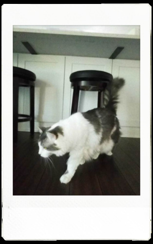Here's a full list of settings for the camera within the app under "Operation Settings". The wording is very confusing.
Options: 5 min, 2 min, OFF
factory reset
Options: Rainbow, Warm color gradation, Cool color gradation, White
File browser for the internal memory and MicroSD card
You can choose to format the internal memory or MicroSD card
Options: off/on
Options: 3, 2, 1
Options: integers between 10 and 0
Options: Startup sound 2, Startup sound 1
Options: Off/On. I don't see that it added dates to any of my photos, so this may be exclusively for the Link printer.
Options: YYYY/MM/DD, DD/MM/YYYY, MM/DD/YYYY
Options: INSTAX-Rich mode, INSTAX-Natural mode. Seems to be only for print settings as well.
Options: Automatic, OFF, ON
Options: between '+2 and '-2 in increments of 1/3
The photos in this app cannot be (easily) imported to Instax Up! app. That app requires the camera to scan the physical photo, though there are ways around this.
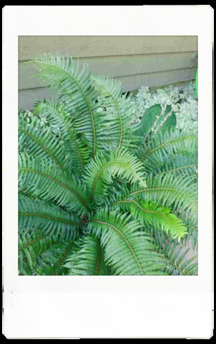I do not own an instax Link printer and am unable to review that functionality. The manual says it can directly connect to the link by changing the switch on the bottom to L. The printer will print the next photo you take with the camera.
The camera saves jpg format images to the microSD card (and internal memory) at 2560x1920 pixels (1.2 MB) regardless of mini, square, or wide being chosen in the app settings. There are no frames on these images. Remote shooting does save the full size resulting image to the SD card if the automatic deletion setting is disabled.
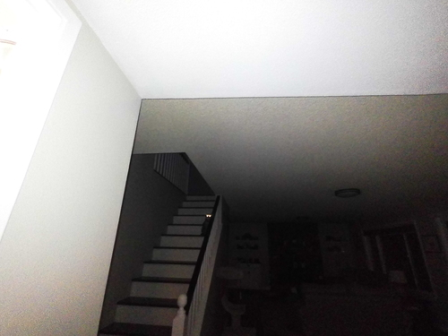The image quality is poor! The images look like they came from a very cheap digicam. No shortage of digital grain here. I will be shocked if your phone cannot take a better quality shot in the year 2025.
When downloaded through the app, the image will have a frame around it imitating an instax film shot. Mini outputs 670x1066, square outputs 886x1066, and wide outputs 1218x1066. These are PNG format.
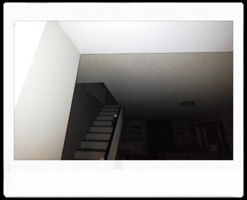You can choose in the app what "film" the images will be imported as (mini/square/wide). This is just a frame around the image. You can change the "film" to different "film" in the image editor, but this will not show you the rest of the original file, but zoom in on the original image. Shooting "wide" will give you the best quality results when using the editor. You can change any individual image to mini or square in the editor without image quality loss.
I very highly suggest using a microSD card and turning off the automatic deletion setting. I'm going to stress this about 10 more times in this review.
I cannot recommend this camera to someone who is not tech savvy at all for a big reason: 50 photos I took would have been lost due to a failed download to the app had I not used a MicroSD card and changed the automatic deletion setting.
After hitting the image limit and connecting to the app for download, it got stuck on the last image until the camera timed out and turned off. The 50 photos that were downloaded did not appear in the instax pal app gallery. They still remained on my MicroSD card, but I fear that they might have all been lost if I had not used a microSD card and changed the setting to not delete after copying.
If you use a MicroSD card, you must go to Settings->Operation settings and turn off "Automatic image deletion in the camera" after transfer in order to keep the original files. The default is on. Without doing this, your MicroSD card is effectively useless. The camera will only take 50 photos before needing to be connected to the app and there is room for all 50 of those photos in internal memory. I suggest changing this setting immediately during set up before taking photos. You can also remove the MicroSD and save them on your PC. Your photos will be automatically downloaded to your phone and deleted from your camera.
You can view the images on the internal storage and SD card by looking at "media restrictions" in settings. The tool will show you 4 images per page that you must scroll through to get to the most recently taken image. Using the download option from here will download the image straight to your phone photo album, not the Instax Pal app gallery. I do not believe it's possible to import them to use the editing tools and film frames. You have the option to copy files from the SD card to the internal memory for each individual photo.
If a microSD card is inserted, the camera will not save to internal memory. I reenabled automatic deletion in the app and turned off bluetooth on my phone. I took 2 photos, turned off the camera, and removed the microSD card. I reconnected the camera to my phone and the two new photos did not appear in the gallery, though I could see them on my PC with the MicroSD card. I reinserted my MicroSD card and found the two images were not downloaded to the gallery after and thus, not deleted either.
The 50 image limit is reset to 0 while connected to the app. If you would like to exploit this to bypass the 10 minutes of waiting for the files to download to your phone, remove the MicroSD card from the camera, connect to your app, turn off the camera and reinsert the MicroSD card. This will prevent your photos from being downloaded, but will also prevent you from editing them with the cute instant film frame in the editor.
The photos are bad at best, but snapping a shot with a small pink orb keychain is enjoyable! They aren't good photos, but they are fun photos. Do not go in expecting a quality shot. Do not expect to get 100% of your subject in the image. There is none of the charm of analog that the film instax cameras offer, but if you are nostalgic for early digicams, there is plenty of that look.
A concern I had while researching this before purchase was the app. I was not able to find a clear response to this. As I feared, I found the future of this toy is limited to access to the app. The product box does state the app is required for use, but the official FAQ provides a false answer to the first question. The camera is only usable for 50 shots before needing the app. This is a very clear lie and I am disappointed in Fujifilm for it.
To sum it up: the images are poor, the software is poor, the usability is poor. This is a very poorly engineered device, but a fun little novelty keychain camera. It is extremely cute. For $15, I think this is a really fun buy and will look perfect next to my Lalabu on my purse.
That being said, I would have never spent full price on this. This is a toy that feels like it belongs in the toy section and not the camera department. I don't regret waiting for the drop from $30 to $15. Any site telling you this is a great deal at $50 is being paid for their review. It's not worth $50.
I recommend this to instax otaku when found for a low price of perhaps $20 or less.
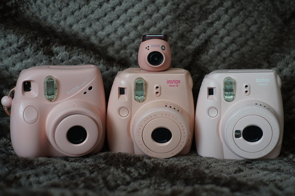Ryan brought up the idea that this camera would be great for conventions. He is absolutely right! This is the ideal camera to leave in your hotel room and let your partygoers mess with or walk around the dealer's hall with it. Just make sure to come back and release the photos from it when it's full.